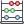
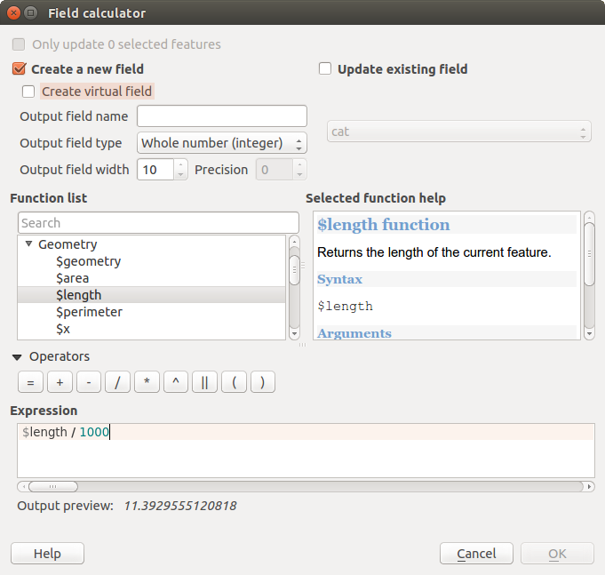

Calcolatore di campi
The  Field\ Calculator button in the attribute table allows you to perform calculations on the basis of existing attribute values or defined functions, for instance, to calculate length or area of geometry features. The results can be written to a new attribute field, a virtual field, or they can be used to update values in an existing field.
{kind=link}
Suggerimento
Virtual Fields
- Virtual fields are not permanent and are not saved.
- To make a field virtual it must be done when the field is made.
The field calculator is now available on any layer that supports edit. When you click on the field calculator icon the dialog opens (see figure_attributes_3). If the layer is not in edit mode, a warning is displayed and using the field calculator will cause the layer to be put in edit mode before the calculation is made.
The quick field calculation bar on top of the attribute table is only visible if the layer is editable.
In quick field calculation bar, you first select the existing field name then open the expression dialog to create your expression or write it directly in the field then click on Update All button.
Expression tab
In the field calculator dialog, you first must select whether you want to only update selected features, create a new attribute field where the results of the calculation will be added or update an existing field.
Figure Attributes 3:
 Calcolatore di campi
Per aggiungere un nuovo campo devi creare il nome, il tipo di campo (intero, decimale, testo) e la lunghezza del campo. Per il tipo Numero decimale puoi anche definire la precisione, ovvero il numero di cifre dopo la virgola: ad esempio un campo con larghezza 10 e precisione 3 avrà 6 cifre prima della virgola, la virgola stessa è un campo ed infine 3 cifre decimali (vedi figure_attributes_3).
A short example illustrates how field calculator works when using the Expression tab. We want to calculate the length in km of the railroads layer from the KADAS sample dataset:
Carica lo shapefile
railroads.shpe clicca su Apri\ tabella\ attributi.
Apri\ tabella\ attributi.Attiva la modalità
 Modifica e apri il Calcolatore\ di\ campi.
Modifica e apri il Calcolatore\ di\ campi.Spunta la casella di controllo
 Crea un nuovo campo per attivare la creazione di un nuovo campo.
Crea un nuovo campo per attivare la creazione di un nuovo campo.Chiama il campo
length, impostaNumero decimale (real)come tipo, 10 come larghezza e 3 come precisione.Ora fai doppio click sulla funzione
$lengthpresente nel gruppo Geometria per aggiungerla nella sezione Espressione.Completa l’espressione digitando ‘’/ 1000’’ nel campo Espressione e clicca [OK].
You can now find a new field
lengthin the attribute table.
The available functions are listed in Expressions chapter.
Function Editor tab
With the Function Editor you are able to define your own Python custom functions in a comfortable way. The function editor will create new Python files in qgis2pythonexpressions and will auto load all functions defined when starting QGIS. Be aware that new functions are only saved in the expressions folder and not in the project file. If you have a project that uses one of your custom functions you will need to also share the .py file in the expressions folder.
Here’s a short example on how to create your own functions:
@qgsfunction(args="auto", group='Custom')
def myfunc(value1, value2 feature, parent):
pass
The short example creates a function ‘myfunc’ that will give you a function with two values. When using the args=’auto’ function argument the number of function arguments required will be calculated by the number of arguments the function has been defined with in Python (minus 2 - feature, and parent).
This function then can be used with the following expression:
myfunc('test1', 'test2')
Your function will be implemented in the ‘Custom’ Functions of the Expression tab after using the Run Script button.
Further information about creating Python code can be found on http://www.qgis.org/html/en/docs/pyqgis_developer_cookbook/index.html.
The function editor is not only limited to working with the field calculator, it can be found whenever you work with expressions. See also Expressions.